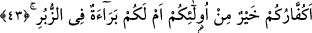
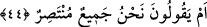

kurbağalar, kan, dilindeki bağın çözülmesi ve denizin yarılmasıdır. “Biz de onları
kudretimize lâyık bir şekilde yakaladık.” Yalanlamaları sırasında karşı konulamaz ve
yenilmez bir azab ile yakaladık. Bu âyet-i kerîme’nin amacı, Allah’ın muktedir olduğunu
ve gücü karşısında hiç bir şeyin duramayacağını vurgulamaktadır. Bu sebeple,
yalanladıklarından dolayı onları yakalamış ve O’nu hiç bir şey engelleyememiştir.
Buradaki azaptan maksad, onların Kızıldenizde veya Nil nehrinde boğulmalarıdır.
Âcizâne kanâatime göre, boğulmanın muhtemelen sırrı şudur: Firavun, Mûsâ’ya
kendisini tahta kutunun içinde getiren su sâyesinde kavuşmuştur. Ama, ne su nimetinden,
ne de Mûsâ (a.s.)’dan dolayı Allah’a şükretti. Şükretmediği için, Allah hâlini değiştirip
Firavun ve kavmini, başkaları için hayat sebebi olan su ile helâk etti.
Lût (a.s.)’ın kavmine nisbetle, gözlerini kör etme olayının azab cümlesinden
sayılması, tufan ve benzerlerinin âyetler cümlesine alınmasının, Lût (a.s.)’ın âilesine
izâfetle sebebi açıktır. Çünkü, onların vücûduna yönelik olan azap kasdedilmiştir.
Gözlerin silme kör edilmesi de onlara azaptır. Firavun’a gösterilen bazı mûcizeler öyle
değildir.
43. Şimdi sizin kâfirleriniz, onlardan daha mı iyidirler? Yoksa kitaplarda sizin için
bir berât mı var?
“Şimdi sizin kâfirleriniz, onlardan daha mı iyidirler?” Ey arap topluluğu, sizin
kâfirleriniz Allah katında sayı, şiddet, güç ve kuvvet bakımından Nûh, Hûd, Sâlih ve
Lût (a.s.)’ın kavimleri ile Firavun’un âilesi gibi sayılanlardan daha mı üstündürler?
Burada şu mânâ anlaşılır; bu sayılan kavimler, anlatılan bazı işlerde sizden güç, kuvvet
ve imkân bakımından daha üstün oldukları halde başlarına gelen bu felâketlerin, siz
onlardan daha isyankar iken başınıza gelmeyeceğini mi umuyorsunuz?
“Yoksa kitaplarda sizin için bir berâet mi var?” Bu cümlede, onlardan yüz çevirme
ve daha önce getirilen delil ile mahcub etme şeklinden başka bir huccet getirme
yöntemine geçilmiştir. Yoksa isyan ve inkârınıza karşılık, Allah’ın azabından berâet
ettiğinize dâir mukaddes kitaplarda indirilmiş bir belge veya teminatınız mı var? Bu
berâete güvenerek mi üzerinde bulunduğunuz isyankar durumunuzu ısrarla
sürdürüyorsunuz? Esas anlamı; inkâr edenleriniz, Allah’ın azabından bir güvence
içindedirler tarzında sizin için semavî kitaplarda gökten inmiş böyle bir belge ve
teminat yoktur.